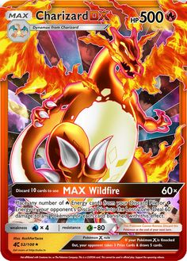

A día de hoy encontramos Pokémon como algo normal, una serie, sus juegos, cartas y productos algo normal en nuestro día a día. Pero ¿cómo llego a donde está hoy?
La respuesta no está clara, pero muchos atribuyen su éxito al conjunto global. Todo comenzó como un juego, el cuál no tuvo mucho éxito, pero con el aumento de series de anime, se conviertió en uno mas.
La idea era original, no habia ningún juego similar, posteriormente la serie (dirigida a la audiencia joven) tenía una trama fácil de seguir, con buenas escenas de acción y parte de comedia entre ellas.
La mejor respuesta es que apareció en el momento y lugar adecuado.
A día de hoy existe una gran cantidad de productos vendidos por la compañía. Desde figuras, camisetas, gorros, bañadores, llaveros, peluches, etc.
Sín duda, los más populares son dos:
Los videojuegos
Las cartas
